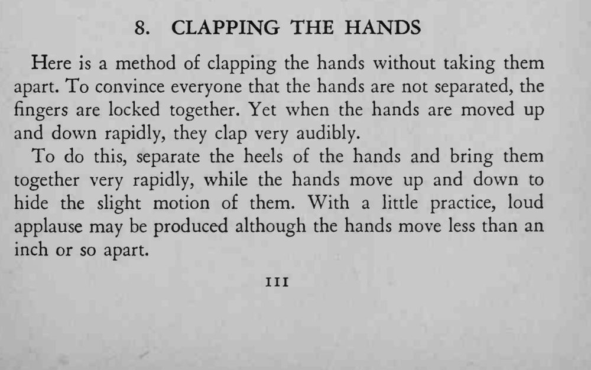

魔术师十指交叉扣在一起，双手并不分开，却能拍出响亮清脆的掌声。
上下晃动的幅度要盖过掌根的开合，声音才像真的拍手。

Here is a method of clapping the hands without taking them apart. To convince everyone that the hands are not separated, the fingers are locked together. Yet when the hands are moved up and down rapidly, they clap very audibly. To do this, separate the heels of the hands and bring them together very rapidly, while the hands move up and down to hide the slight motion of them. With a little practice, loud applause may be produced although the hands move less than an inch or so apart.